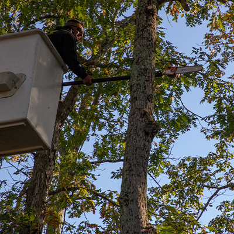

The older the tree is, the less pruning will need to be done. Younger trees may need to be trimmed every 2-3 years whereas older, more mature trees only need limb removal every 3-5 years. So, let’s talk about pruning. Unless you are an avid gardener, the process of pruning may not be very clear. The practice of pruning is selectively removing specific parts of a plant to improve the plants health or remove injury or disease. This can look different for different types of flora. For example, pruning flowers can include deadheading. This is the process of removing spent flowers from the plant in order to encourage the growth of new blooms. For trees, pruning is the removal of limbs and branches for any number of reasons. Pruning is an important part of tree service in Forked River and should only be done by professionals.Why Pruning is so Important to Tree Service in Forked River
Deadheading is something that is done in order to improve the health of the plant. Pruning limbs and branches off of trees is done to accomplish a number of things for trees and your property.
Removing the dead flowers from a plant ensures all of the energy goes to new growth. Any part of a plant that is faltering will receive additional nourishment in attempt to repair the wound. Lower branches on a tree are often damaged and these injuries can suck up a lot of energy. The operation of healing can take a lot of time and therefore, a lot of energy. Pruning these branches makes it easier for the tree to heal conserving energy and nutrients.
Moving into a new home means inheriting the landscape. This, many times, includes mature and overgrown trees. These trees are often planted too close to the house and require pruning in order to protect the home. Heavy branches overhanging a roof can sometimes lead to disaster. Especially in these precarious situations, it is of utmost importance to only have tree service in Forked River done by professionals.
Large branches can heavy. Really heavy. The only thing holding up those branches is the tree trunk and the root system. If the canopy of a tree gets too heavy, it can cause an uprooting event, killing the entire tree. In addition to that, falling trees cause major damage to houses, can destroy properties, and in the worst cases, lead to personal injury. Pruning the appropriate branches can keep trees growing tall and strong.
When Pruning Goes Wrong
As important as pruning is, it can be detrimental to a tree if done wrong. An overgrown canopy can cause an uprooting, but over pruning can end in the same result. If too many branches are removed off of one side of a tree, the weight on the opposite can become too much for the roots to hold.
Plus, taking off too many branches at one time can cause so much damage that the tree is unable to come back from. While removing select branches is helpful in conserving energy, cutting off too many at one time creates too many wounds for the tree to heal at one time.
A process called tree topping is a type of pruning that all legitimate tree companies do not perform or recommend. This harmful practice chops off branches from the top of a tree without discretion, leaving bare branches. Paying no mind to which branches are being cut greatly reduces the likelihood that the tree will for one, heal, and for two, survive. You should steer clear of anyone claiming to be a reputable tree company that recommends you have your trees topped.
Pruning Needs to Be Done Right to Be Effective
Pruning as part of your tree service in Forked River is only advantageous to the tree when done correctly. The goal of pruning is to choose select branches and limbs to remove. These are decided on based on positioning of the branches, health of the limbs and the tree, and reason for the removal. Neglecting to take this step and instead cut off branches haphazardly can ultimately kill a tree.
When you need professional tree care in Ocean County or Monmouth County, contact Ben Bivins Tree Experts. We are here to help with all your tree service in Forked River needs!